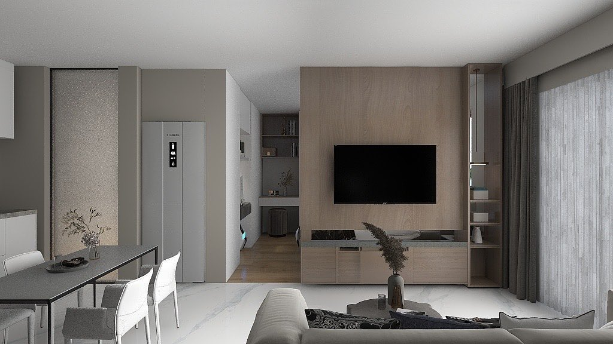
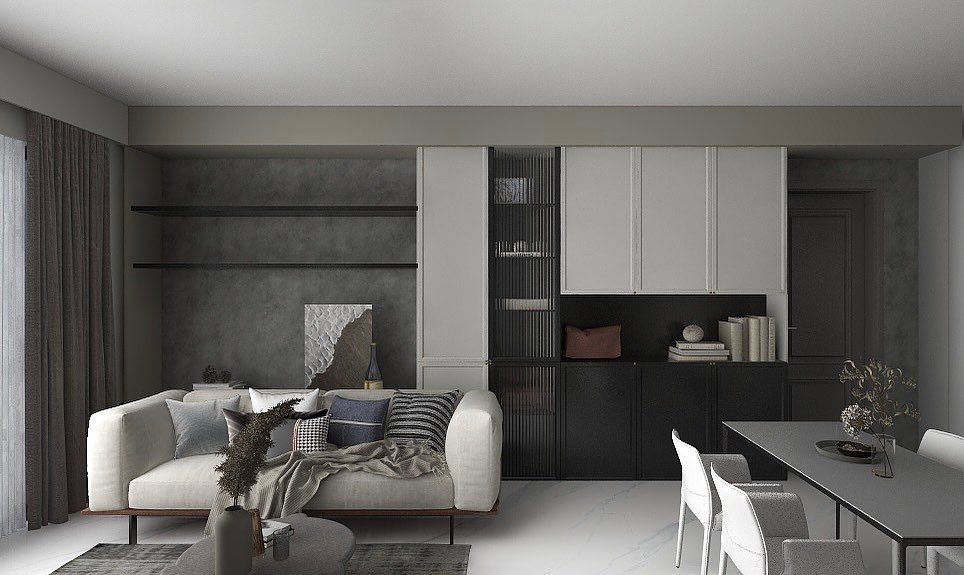
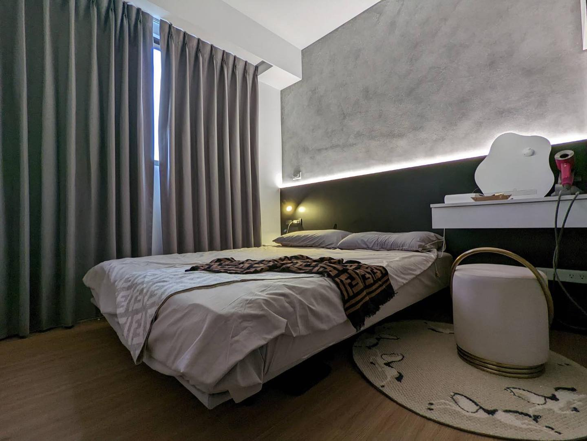
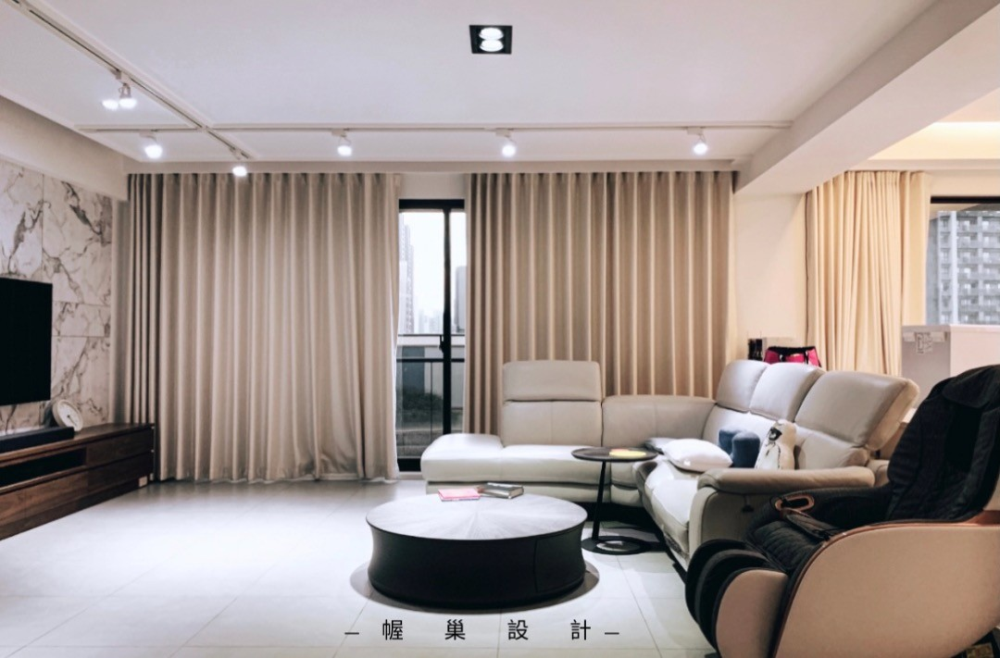
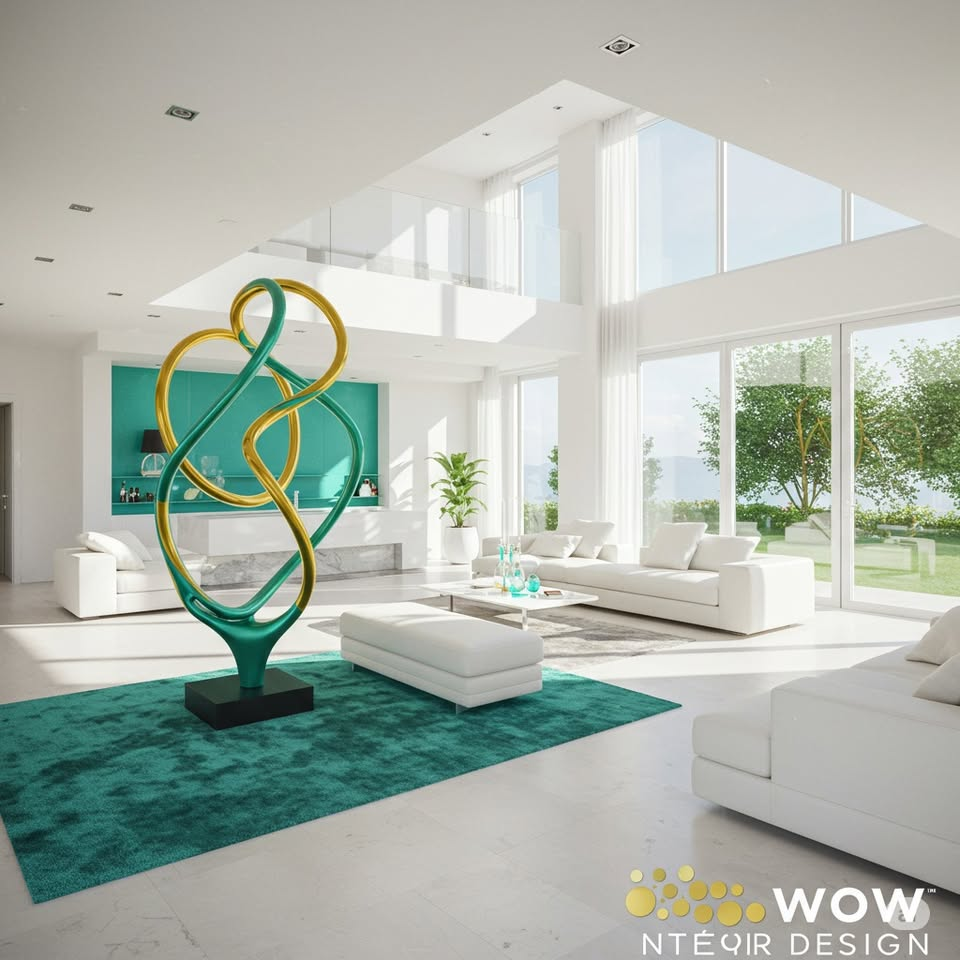

🌿Beyond expectation， beyond space.
🏡 不是打造空間，而是創造讓你驚呼 WOW 的生活體驗
好的設計，是當你踏入空間的那一刻，會忍不住發自內心「WOW！」一聲。
我們致力於打破常規，為你打造充滿驚喜與新意的專屬空間，
讓每一次回家，都是一場視覺與心靈的盛宴。





🌿Beyond expectation， beyond space.
🏡 "WOW：看見設計，驚嘆生活。"
"設計 WOW 你的視界。"
"WOW Design: 空間，為驚喜而生。"